Code
library(rethinking)
library(dagitty)
library(tidyverse)
library(cmdstanr)
# rstudioapi::getActiveDocumentContext()$path |> dirname() |> setwd()library(rethinking)
library(dagitty)
library(tidyverse)
library(cmdstanr)
# rstudioapi::getActiveDocumentContext()$path |> dirname() |> setwd()Consider Bertrand’s paradox, but in this instance with pancakes. We have three pancakes, one with two burnt sides (BB), one with one unburnt side (BU), and one that is unburnt (UU). THe question is: given that we have a pancake that is burnt facing up, what is the probability that the side underneath is burnt too. You can solve this with the simple Bayes rule, but it is even simpler than that. Just count the sides. Conditional on the burnt side facing up, we know that there are three possible sides. Two of those are burnt, so the probability is 2/3. Here is a quick sim:
# simulate a pancake and return randomly ordered sides
sim_pancake <- function() {
pancake <- sample(1:3,1)
sides <- matrix(c(1,1,1,0,0,0),2,3)[,pancake]
sample(sides)
}
# sim 10,000 pancakes
pancakes <- replicate( 1e4 , sim_pancake() )
up <- pancakes[1,]
down <- pancakes[2,]
# compute proportion 1/1 (BB) out of all 1/1 and 1/0
num_11_10 <- sum( up==1 )
num_11 <- sum( up==1 & down==1 )
num_11/num_11_10[1] 0.6651349This is really just a brute force computation of our assumptions. We didn’t get fancy, we just let the computer do the work for us. This is how we will be solving the rest of the chapter.
Recall from Ch. 5 the marriage and divorce problem. Those variables were measured with considerable standard error:
data(WaffleDivorce)
d <- WaffleDivorce
# points
plot( d$Divorce ~ d$MedianAgeMarriage , ylim=c(4,15) , xlab="Median age marriage" , ylab="Divorce rate" )
# standard errors
for ( i in 1:nrow(d) ) {
ci <- d$Divorce[i] + c(-1,1)*d$Divorce.SE[i]
x <- d$MedianAgeMarriage[i]
lines( c(x,x) , ci )
}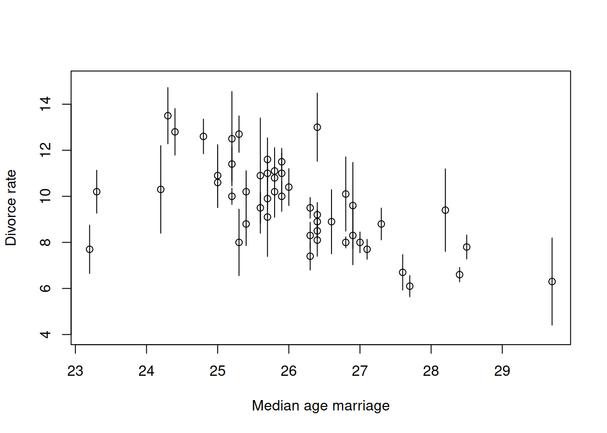
Consider the following DAG:
dag <- dagitty('dag {
A [pos="0.5,0.1"]
M [pos="0.2,0.5"]
D_true [latent, pos="0.8,0.5"]
D_obs [pos="0.8,0.9"]
e_D [latent, pos="1.0,0.9"]
A -> M
A -> D_true
M -> D_true
D_true -> D_obs
e_D -> D_obs
}')
drawdag(dag)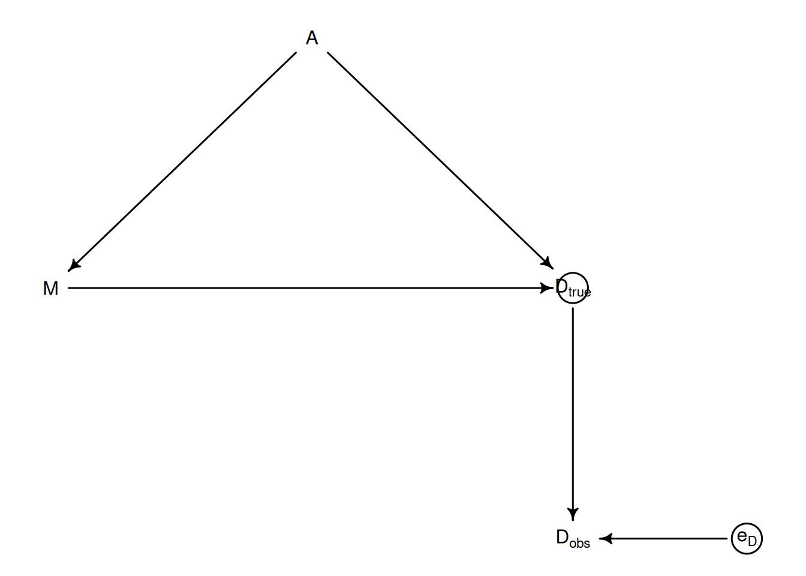
Most regressions would just use \(D_{\text{obs}}\) even though it is noisy. But consider that we might be introducing systematic bias if the measurement error is correlated with a variable of interest. For example, if we were using log population (which is directly correlated with the measurement error).
To incorporate this process into the model, we’ll instead have \(D_{\text{obs}, i} \sim \text{Normal}(D_{\text{true},i}, D_{\text{se,i}})\). Note that for every observed data point, we know how a parameter \(D_{\text{true,i}}\) that we are estimating.
The full model looks like:
\[\begin{align} D_{\text{obs},i} &\sim \text{Normal}(D_{\text{true},i},\, D_{\text{se},i}) \\ D_{\text{true},i} &\sim \text{Normal}(\mu_i,\, \sigma) \\ \mu_i &= \alpha + \beta_A A_i + \beta_M M_i \\ \alpha &\sim \text{Normal}(0,\, 0.2) \\ \beta_A &\sim \text{Normal}(0,\, 0.5) \\ \beta_M &\sim \text{Normal}(0,\, 0.5) \\ \sigma &\sim \text{Exponential}(1) \end{align}\]
There is a bi-directional flow of information. The uncertainty in the measurement influences the regression parameters, and the regression parameters influence the uncertainty in the measurement error. There will be some helpful shrinkage here.
Let’s go ahead and fit this model:
dlist <- list(
N = nrow(d),
D_obs = standardize(d$Divorce),
D_se = d$Divorce.SE / sd(d$Divorce), # Need to divide by the same sd that we used to standardize D_obs or else it wont make sense
A = standardize(d$MedianAgeMarriage),
M = standardize(d$Marriage)
)
mod <- cmdstan_model("mod_15.1.stan")
fit <- mod$sample(
data = dlist,
seed = 123,
chains = 4,
parallel_chains = 4,
iter_warmup = 1000,
iter_sampling = 1000,
refresh=500
)fit$summary(c('alpha', 'beta_A', 'beta_M', 'sigma'))# A tibble: 4 × 10
variable mean median sd mad q5 q95 rhat ess_bulk ess_tail
<chr> <dbl> <dbl> <dbl> <dbl> <dbl> <dbl> <dbl> <dbl> <dbl>
1 alpha -0.0548 -0.0564 0.0960 0.0940 -0.216 0.106 1.000 5546. 3161.
2 beta_A -0.613 -0.613 0.156 0.151 -0.871 -0.357 1.00 4339. 3113.
3 beta_M 0.0539 0.0548 0.165 0.168 -0.213 0.323 1.00 4101. 2847.
4 sigma 0.582 0.576 0.107 0.104 0.416 0.770 1.00 1536. 2022.Note that \(\beta_A\) is roughly half of what is was in chapter 5. This can be explained if we look at the extremes for age of marriage amongst states. They tended to have larger measurement error, and as a result the model didn’t treat them as it would a state with a lower measurement of error. Thus, those outlier states didn’t contribute as much as states with lower measurement error.
draws <- fit$draws(format = "df")
D_true_cols <- paste0("D_true[", seq_len(dlist$N), "]")
D_true_mean <- colMeans(draws[, D_true_cols])Warning: Dropping 'draws_df' class as required metadata was removed.alpha_draws <- draws$alpha
beta_A_draws <- draws$beta_A
# ── Naive OLS (ignores measurement error) ─────────────────────────────────────
df_naive <- data.frame(D_obs = dlist$D_obs, A = dlist$A, M = dlist$M)
naive_fit <- lm(D_obs ~ A + M, data = df_naive)
# ── Prediction grid ───────────────────────────────────────────────────────────
A_seq <- seq(min(dlist$A) - 0.15, max(dlist$A) + 0.15, length.out = 100)
# ME model: posterior mean + 89% CI over mu
mu_me_mat <- outer(alpha_draws, rep(1, length(A_seq))) +
outer(beta_A_draws, A_seq)
mu_me_mean <- colMeans(mu_me_mat)
mu_me_ci <- apply(mu_me_mat, 2, quantile, probs = c(0.055, 0.945))
# Naive model: 89% frequentist CI
naive_pred <- predict(naive_fit,
newdata = data.frame(A = A_seq, M=mean(dlist$M)),
interval = "confidence",
level = 0.89)
# ── Figure 15.2 ───────────────────────────────────────────────────────────────
par(mfrow = c(1, 2), mar = c(4, 4, 1.5, 1))
# Left panel — shrinkage as a function of measurement error
shrinkage <- D_true_mean - dlist$D_obs
plot(dlist$D_se, shrinkage,
xlab = "Divorce rate, standard error",
ylab = "D_est - D_obs",
pch = 19, col = rangi2)
abline(h = 0, lty = 2, col = "gray50")
# Right panel — regression comparison
plot(dlist$A, dlist$D_obs,
xlab = "Median age marriage (std)",
ylab = "Divorce rate (std)",
pch = 1, col = col.alpha("black", 0.5))
# Naive regression — dashed gray
shade(t(naive_pred[, c("lwr", "upr")]), A_seq,
col = col.alpha("black", 0.15))
lines(A_seq, naive_pred[, "fit"], lty = 2, col = "gray40", lwd = 2)
# ME regression — blue
shade(mu_me_ci, A_seq, col = col.alpha("steelblue", 0.3))
lines(A_seq, mu_me_mean, col = "steelblue", lwd = 2)
# Segments: D_obs → posterior D_true mean, then posterior mean points
for (i in seq_len(dlist$N)) {
segments(x0 = dlist$A[i], y0 = dlist$D_obs[i],
x1 = dlist$A[i], y1 = D_true_mean[i],
col = col.alpha("steelblue", 0.7))
}
points(dlist$A, D_true_mean, pch = 19, col = "steelblue")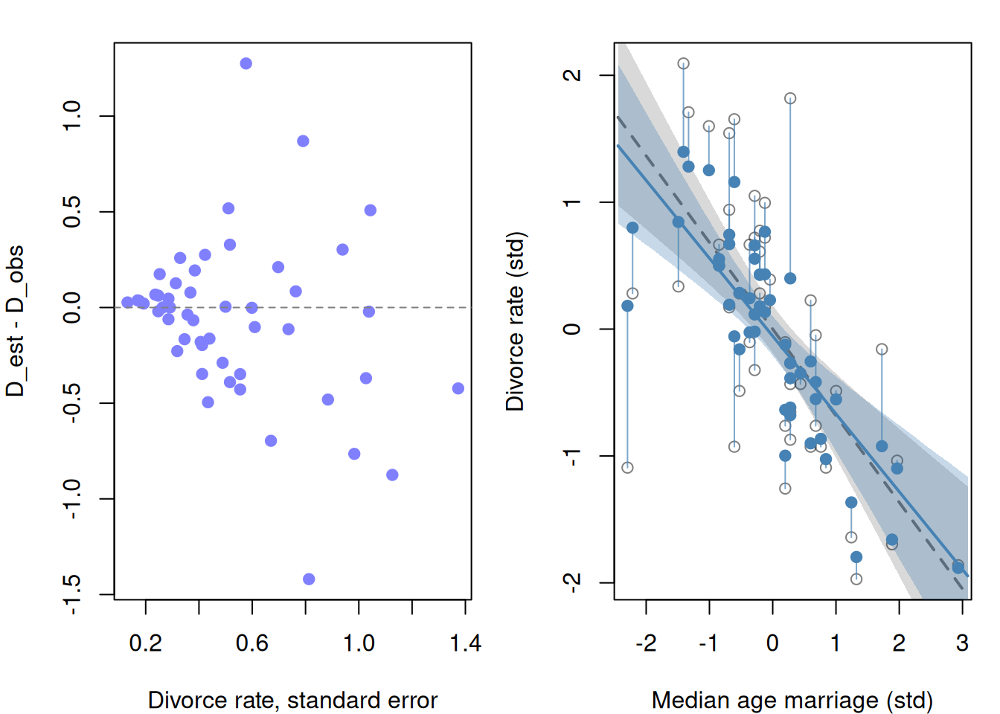
Take a look at the plot above. It shows that as divorce rate standard error increased, so did our shrinkage of those estimates. You can also see the slight tilt in the regression line for when measurement error is taken into account. Our slope is less negative (blue line).
We could of course also consider the case where there is measurement error on a predictor. Consider the DAG:
dag <- dagitty('dag {
A [pos="0.5,0.1"]
M_true [latent, pos="0.2,0.5"]
D_true [latent, pos="0.8,0.5"]
M_obs [pos="0.2,0.9"]
D_obs [pos="0.8,0.9"]
e_M [latent, pos="0.0,0.9"]
e_D [latent, pos="1.0,0.9"]
A -> M_true
A -> D_true
M_true -> D_true
M_true -> M_obs
e_M -> M_obs
D_true -> D_obs
e_D -> D_obs
}')
drawdag(dag)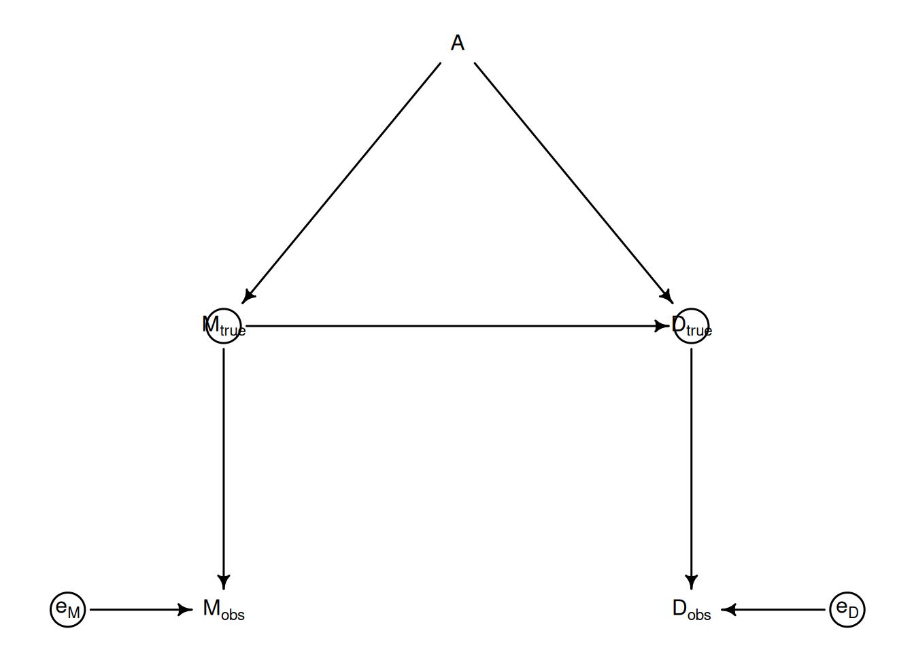
We are making an assumption that the errors aren’t correlated, but that is not always the case. Our model now becomes:
\[\begin{align} D_{\text{obs},i} &\sim \text{Normal}(D_{\text{true},i},\, D_{\text{se},i}) \\ D_{\text{true},i} &\sim \text{Normal}(\mu_i,\, \sigma) \\ \mu_i &= \alpha + \beta_A A_i + \beta_M M_{\text{true},i} \\ M_{\text{obs},i} &\sim \text{Normal}(M_{\text{true},i},\, M_{\text{se},i}) \\ M_{\text{true},i} &\sim \text{Normal}(0,\, 1) \\ \alpha &\sim \text{Normal}(0,\, 0.2) \\ \beta_A &\sim \text{Normal}(0,\, 0.5) \\ \beta_M &\sim \text{Normal}(0,\, 0.5) \\ \sigma &\sim \text{Exponential}(1) \end{align}\]
Notice that we are using \(M_{\text{true}}\) in the regression equation, not \(M_{\text{obs}}\). Let’s go ahead and fit:
dlist <- list(
N = nrow(d),
D_obs = as.numeric(standardize(d$Divorce)),
D_se = d$Divorce.SE / sd(d$Divorce),
M_obs = as.numeric(standardize(d$Marriage)),
M_se = d$Marriage.SE / sd(d$Marriage),
A = as.numeric(standardize(d$MedianAgeMarriage))
)
mod <- cmdstan_model("mod_15.2.stan")
fit <- mod$sample(
data = dlist,
seed = 123,
chains = 4,
parallel_chains = 4,
iter_warmup = 1000,
iter_sampling = 1000,
refresh = 500
)Running MCMC with 4 parallel chains...
Chain 1 Iteration: 1 / 2000 [ 0%] (Warmup)
Chain 1 Iteration: 500 / 2000 [ 25%] (Warmup) Chain 1 Informational Message: The current Metropolis proposal is about to be rejected because of the following issue:Chain 1 Exception: normal_lpdf: Scale parameter is 0, but must be positive! (in '/tmp/Rtmp6U3Tga/model-cdf44f149259.stan', line 32, column 2 to column 63)Chain 1 If this warning occurs sporadically, such as for highly constrained variable types like covariance matrices, then the sampler is fine,Chain 1 but if this warning occurs often then your model may be either severely ill-conditioned or misspecified.Chain 1 Chain 2 Iteration: 1 / 2000 [ 0%] (Warmup)
Chain 2 Iteration: 500 / 2000 [ 25%] (Warmup) Chain 2 Informational Message: The current Metropolis proposal is about to be rejected because of the following issue:Chain 2 Exception: normal_lpdf: Scale parameter is 0, but must be positive! (in '/tmp/Rtmp6U3Tga/model-cdf44f149259.stan', line 32, column 2 to column 63)Chain 2 If this warning occurs sporadically, such as for highly constrained variable types like covariance matrices, then the sampler is fine,Chain 2 but if this warning occurs often then your model may be either severely ill-conditioned or misspecified.Chain 2 Chain 3 Iteration: 1 / 2000 [ 0%] (Warmup)
Chain 3 Iteration: 500 / 2000 [ 25%] (Warmup)
Chain 4 Iteration: 1 / 2000 [ 0%] (Warmup)
Chain 4 Iteration: 500 / 2000 [ 25%] (Warmup)
Chain 1 Iteration: 1000 / 2000 [ 50%] (Warmup)
Chain 1 Iteration: 1001 / 2000 [ 50%] (Sampling)
Chain 1 Iteration: 1500 / 2000 [ 75%] (Sampling)
Chain 2 Iteration: 1000 / 2000 [ 50%] (Warmup)
Chain 2 Iteration: 1001 / 2000 [ 50%] (Sampling)
Chain 2 Iteration: 1500 / 2000 [ 75%] (Sampling)
Chain 3 Iteration: 1000 / 2000 [ 50%] (Warmup)
Chain 3 Iteration: 1001 / 2000 [ 50%] (Sampling)
Chain 4 Iteration: 1000 / 2000 [ 50%] (Warmup)
Chain 4 Iteration: 1001 / 2000 [ 50%] (Sampling)
Chain 1 Iteration: 2000 / 2000 [100%] (Sampling)
Chain 3 Iteration: 1500 / 2000 [ 75%] (Sampling)
Chain 4 Iteration: 1500 / 2000 [ 75%] (Sampling)
Chain 1 finished in 0.4 seconds.
Chain 2 Iteration: 2000 / 2000 [100%] (Sampling)
Chain 3 Iteration: 2000 / 2000 [100%] (Sampling)
Chain 4 Iteration: 2000 / 2000 [100%] (Sampling)
Chain 2 finished in 0.4 seconds.
Chain 3 finished in 0.4 seconds.
Chain 4 finished in 0.4 seconds.
All 4 chains finished successfully.
Mean chain execution time: 0.4 seconds.
Total execution time: 0.6 seconds.fit$summary(c("alpha", "beta_A", "beta_M", "sigma"))# A tibble: 4 × 10
variable mean median sd mad q5 q95 rhat ess_bulk ess_tail
<chr> <dbl> <dbl> <dbl> <dbl> <dbl> <dbl> <dbl> <dbl> <dbl>
1 alpha -0.0390 -0.0382 0.0963 0.0953 -0.200 0.118 1.00 4492. 3262.
2 beta_A -0.545 -0.549 0.161 0.158 -0.803 -0.275 1.00 2162. 3066.
3 beta_M 0.194 0.190 0.207 0.203 -0.144 0.540 1.00 1696. 2533.
4 sigma 0.563 0.560 0.109 0.108 0.390 0.748 1.00 1328. 1519.Looks like the coefficient values haven’t shifted much. But, from a generative standpoint, our estimates for \(M\) has changed substantially:
draws <- fit$draws(format = "df")
M_true_cols <- paste0("M_true[", seq_len(dlist$N), "]")
D_true_cols <- paste0("D_true[", seq_len(dlist$N), "]")
M_true_map <- colMeans(draws[, M_true_cols])Warning: Dropping 'draws_df' class as required metadata was removed.D_true_map <- colMeans(draws[, D_true_cols])Warning: Dropping 'draws_df' class as required metadata was removed.par(mfrow = c(1, 2), mar = c(4, 4, 1.5, 1))
# Left: M shrinkage
plot(dlist$M_obs, M_true_map,
xlab = "Marriage rate, observed (std)",
ylab = "Marriage rate, MAP estimate (std)",
pch = 19, col = rangi2,
xlim = range(dlist$M_obs) + c(-0.1, 0.1),
ylim = range(dlist$M_obs) + c(-0.1, 0.1))
abline(a = 0, b = 1, lty = 2, col = "gray50")
for (i in seq_len(dlist$N)) {
segments(x0 = dlist$M_obs[i], y0 = dlist$M_obs[i],
x1 = dlist$M_obs[i], y1 = M_true_map[i],
col = col.alpha("black", 0.5))
}
# Right: observed vs estimated (M, D) pairs
plot(NULL,
xlim = range(c(dlist$M_obs, M_true_map)) + c(-0.1, 0.1),
ylim = range(c(dlist$D_obs, D_true_map)) + c(-0.1, 0.1),
xlab = "Marriage rate (std)",
ylab = "Divorce rate (std)")
# Segments connecting observed to estimated for each state
for (i in seq_len(dlist$N)) {
segments(x0 = dlist$M_obs[i], y0 = dlist$D_obs[i],
x1 = M_true_map[i], y1 = D_true_map[i],
col = col.alpha("black", 0.4))
}
# Observed pairs (open circles)
points(dlist$M_obs, dlist$D_obs,
pch = 1, col = col.alpha("black", 0.7))
# Estimated pairs (filled, blue)
points(M_true_map, D_true_map,
pch = 19, col = rangi2)
legend("topright",
legend = c("Observed", "MAP estimate"),
pch = c(1, 19),
col = c(col.alpha("black", 0.7), rangi2),
bty = "n")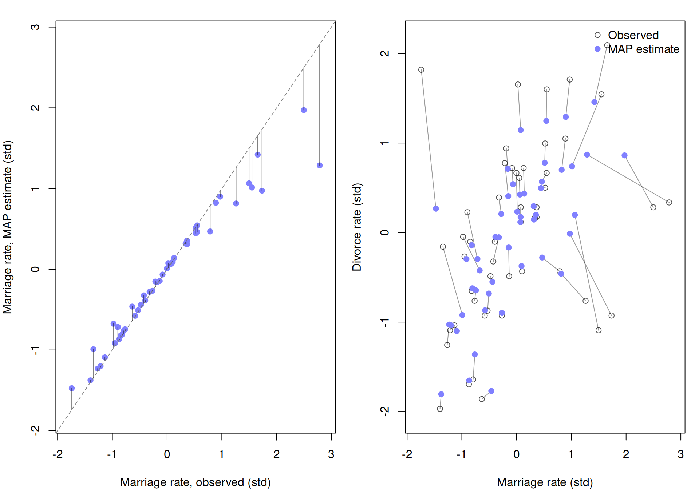
The take home with this experiment: don’t throw away information. If you have some quantity that shows the uncertainty around the mean use it.
Now, consider the following DAG:
dag <- dagitty('dag {
A [pos="0.5,0.1"]
M_true [latent, pos="0.2,0.5"]
D_true [latent, pos="0.8,0.5"]
M_obs [pos="0.2,0.9"]
D_obs [pos="0.8,0.9"]
e_M [latent, pos="0.35,0.75"]
e_D [latent, pos="0.65,0.75"]
P [pos="0.5,0.55"]
A -> M_true
A -> D_true
M_true -> D_true
M_true -> M_obs
e_M -> M_obs
D_true -> D_obs
e_D -> D_obs
P -> e_M
P -> e_D
}')
drawdag(dag)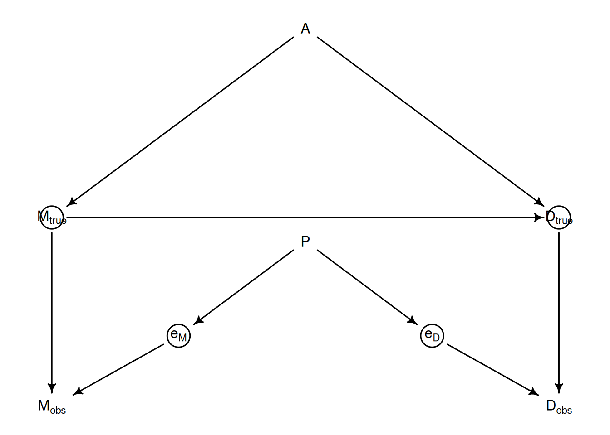
This might be the case where there is a confounding variable that influences by \(e_M\) and \(e_D\). This means that failing to condition on \(P\) with introducing confounding into our model. So conditioning on \(D_{\text{obs}}\) and \(M_{\text{obs}}\) introduces and backdoor.
It might also be the case where a covariate actually impacts the measurement error of the target variable. If, for instance, we were less certain about divorce rates if the state had lower marriage rates. Which might make sense since we will have lower divorces to measure, contributing to higher measurement error. Here is the DAG:
dag <- dagitty('dag {
A [pos="0.5,0.1"]
M_true [latent, pos="0.2,0.5"]
D_true [latent, pos="0.8,0.5"]
M_obs [pos="0.2,0.9"]
D_obs [pos="0.8,0.9"]
e_M [latent, pos="0.35,0.75"]
e_D [latent, pos="0.65,0.75"]
A -> M_true
A -> D_true
M_true -> D_true
M_true -> e_D
M_true -> M_obs
e_M -> M_obs
D_true -> D_obs
e_D -> D_obs
}')
drawdag(dag)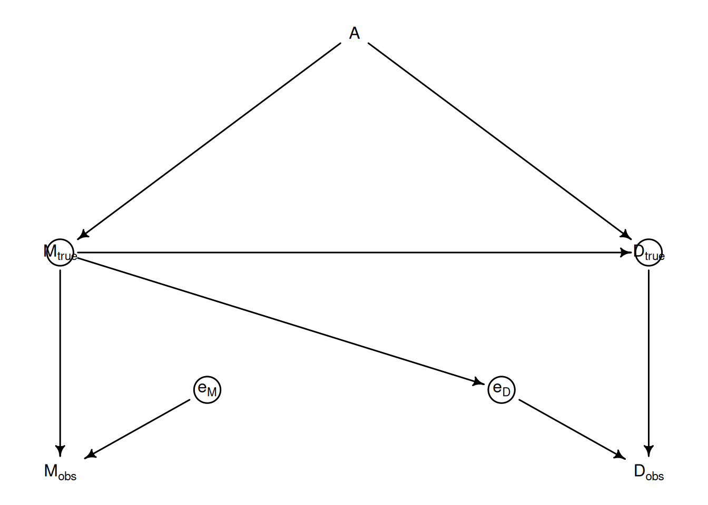
Now consider this DAG:
dag <- dagitty('dag {
e_A [latent, pos="0.0,0.5"]
A_obs [pos="0.3,0.5"]
A_true [latent, pos="0.6,0.5"]
M [pos="0.9,0.3"]
D [pos="0.9,0.7"]
e_A -> A_obs
A_true -> A_obs
A_true -> M
A_true -> D
}')
drawdag(dag)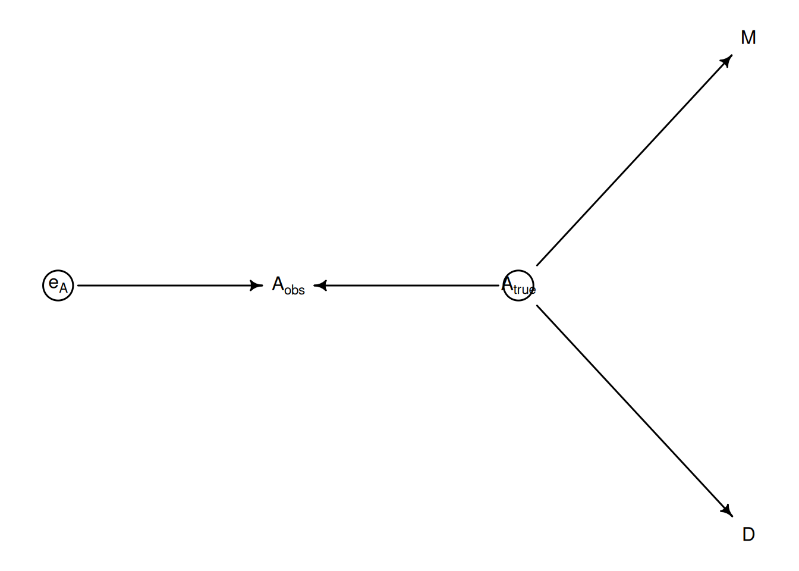
If we naively regress \(M\) and \(A_{\text{obs}}\) on \(D\), then it will show that \(M\) is a strong causal relationship with \(D\). But this is because of the backdoor that is created and that \(M\) contains some information about \(A_{\text{true}}\).
N <- 500
A <- rnorm(N)
M <- rnorm(N, -A)
D <- rnorm(N, A)
A_obs <- rnorm(N, A)
lm(D ~ A_obs + M) |> summary()
Call:
lm(formula = D ~ A_obs + M)
Residuals:
Min 1Q Median 3Q Max
-3.7576 -0.8144 0.0455 0.7548 4.2239
Coefficients:
Estimate Std. Error t value Pr(>|t|)
(Intercept) 0.07447 0.05193 1.434 0.152
A_obs 0.30931 0.04271 7.241 1.70e-12 ***
M -0.31945 0.04212 -7.585 1.65e-13 ***
---
Signif. codes: 0 '***' 0.001 '**' 0.01 '*' 0.05 '.' 0.1 ' ' 1
Residual standard error: 1.159 on 497 degrees of freedom
Multiple R-squared: 0.3156, Adjusted R-squared: 0.3129
F-statistic: 114.6 on 2 and 497 DF, p-value: < 2.2e-16We see that \(M\) is strongly predictive of \(D\). But if we condition on \(A\):
lm(D ~ A + M) |> summary()
Call:
lm(formula = D ~ A + M)
Residuals:
Min 1Q Median 3Q Max
-3.9046 -0.5902 -0.0161 0.6477 3.1872
Coefficients:
Estimate Std. Error t value Pr(>|t|)
(Intercept) 0.04820 0.04472 1.078 0.282
A 1.00412 0.06418 15.646 <2e-16 ***
M 0.02608 0.04468 0.584 0.560
---
Signif. codes: 0 '***' 0.001 '**' 0.01 '*' 0.05 '.' 0.1 ' ' 1
Residual standard error: 0.9977 on 497 degrees of freedom
Multiple R-squared: 0.4931, Adjusted R-squared: 0.4911
F-statistic: 241.7 on 2 and 497 DF, p-value: < 2.2e-16It all loads onto \(A\).
Consider a simple scenario where a student does homework for grade \(H\), and performs based on how much they \(S\). We then introduce a variable \(D\) that is a binary variable indicating if a dog ate the student’s homework. This would be the following:
\(S \rightarrow H_{\text{true}} \rightarrow H_{\text{obs}} \leftarrow D\)$
This would be simple to estimate the distribution of \(H_{\text{true}}\) since \(D\) is essentially at random. We could even ignore \(D\) in our analysis since it doesn’t given us any information about the latent homework score. Plus, \(H_{\text{obs}}\) here acts as a collider.
Now if we add an arrow: \(S \rightarrow D\), which says that studying influences whether the dog will eat the homework, then we will need to incorporate \(D\) in the regression model. But this won’t always help us if we say are in a scenario where a student has to be better than average to show any improvement in homework score. But, we say that if a student studys more than average, the dog will eat the homework.
Let’s start with the original DAG, but now consider adding \(H_{\text{true}} \leftarrow X \rightarrow D\). Where \(X\) is the noisiness of the house. If the house is very noisy, then the dog is more likely to eat the homework and the grade is likely to suffer, regardless of how much studying is done.
Let’s simulate:
N <- 1e3
X <- rnorm(N)
S <- rnorm(X)
H_true <- rbinom(N, size=10, inv_logit(2 + S - 2*X))
D <- ifelse(X > 1, 1, 0)
H_obs <- H_true
H_obs[D == 1] <- NANow let’s fit a simple model where we pretend we have the full data:
mod <- cmdstan_model('mod_15.3.stan')
# H ~ binomial_logit(10, a + bS * S);
fit <- mod$sample(
data = list(N=N, H=H_true, S=S),
seed = 123,
chains = 4,
parallel_chains = 4,
iter_warmup = 1000,
iter_sampling = 1000,
refresh = 500
)fit$summary(c('bS', 'a'))# A tibble: 2 × 10
variable mean median sd mad q5 q95 rhat ess_bulk ess_tail
<chr> <dbl> <dbl> <dbl> <dbl> <dbl> <dbl> <dbl> <dbl> <dbl>
1 bS 0.627 0.627 0.0247 0.0247 0.587 0.668 1.00 2496. 2237.
2 a 1.23 1.23 0.0256 0.0250 1.18 1.27 1.00 2935. 2565.The bias we see here (\(\beta_S\) should be 1) is due to omitted variable bias. It gets even more exaggerated in the GLM case because of the ceiling and floor effects induced by the link function.
Let’s now used the observed data:
# H ~ binomial_logit(10, a + bS * S);
fit <- mod$sample(
data = list(N=sum(1-D), H=H_true[D==0], S=S[D==0]),
seed = 123,
chains = 4,
parallel_chains = 4,
iter_warmup = 1000,
iter_sampling = 1000,
refresh = 500
)fit$summary(c('bS', 'a'))# A tibble: 2 × 10
variable mean median sd mad q5 q95 rhat ess_bulk ess_tail
<chr> <dbl> <dbl> <dbl> <dbl> <dbl> <dbl> <dbl> <dbl> <dbl>
1 bS 0.872 0.872 0.0335 0.0335 0.816 0.926 1.00 2077. 2190.
2 a 1.95 1.95 0.0368 0.0371 1.89 2.01 1.00 2084. 2109.The estimate looks a bit better! Why? Because the noisy house was the factor that contributed to poor homework performance. And we are essentially slicing the data such that the noise isn’t loud enough to engage the dog to eat the homework. This quiets the omitted variable bias. This is also obviously not a universal property. If we instead had D <- ifelse(abs(X) < 1, 0), this wouldn’t work since we would still have to contend with the ceiling/floor effects.
Let’s now consider a final DAG. Maintain the same initial single path that we started with, but now add: \(H_{\text{true}} \rightarrow D\). This is saying that the latent grade of the homework somehow influences whether the dog will eat it or not. We are stuck, because there is nothing we can do to close the backdoor path \(S \rightarrow H_{\text{true}} \rightarrow D \rightarrow H_{\text{obs}}\). The missing variable causes its own missingness.
Recall the primate milk example where we modeled energy in milk \(K\) from neocortex percent \(B\) and body mass \(M\). The DAG looked like \(M \rightarrow K \leftarrow B\) with a confounding observed variable \(U\): \(M \leftarrow U \rightarrow B\).
Further, recall that we didn’t observe all of \(B\), we instead had missing cases that gave us \(B^*\). There are a lot of reasons that we might not observe some \(B\) values. It could be randomly missing (MCAR), it would be that \(M\) influences missingness, or it could be that \(B\) itself influences \(B^*\).
For now though, let’s create a simple missing data model:
\[\begin{align} K_i &\sim \text{Normal}(\mu_i,\, \sigma) \\ \mu_i &= \alpha + \beta_B B_i + \beta_M \log M_i \\ B_i &\sim \text{Normal}(\nu,\, \sigma_B) \\ \alpha &\sim \text{Normal}(0,\, 0.5) \\ \beta_B &\sim \text{Normal}(0,\, 0.5) \\ \beta_M &\sim \text{Normal}(0,\, 0.5) \\ \sigma &\sim \text{Exponential}(1) \\ \nu &\sim \text{Normal}(0.5,\, 1) \\ \sigma_B &\sim \text{Exponential}(1) \end{align}\]
For \(B_i\), the \(\text{Normal}(\nu,\, \sigma_B)\) line becomes a likelihood when the data is present, and a prior when it is not. So we can use the data we do have to inform the parameters for \(\nu\) and \(\sigma_B\).
mod <- cmdstan_model('mod_15.5.stan')
data(milk)
d <- milk
d$K <- as.numeric(standardize(d$kcal.per.g))
d$B <- as.numeric(standardize(d$neocortex.perc/100)) # NAs retained
d$log_M <- as.numeric(standardize(log(d$mass)))
obs_idx <- which(!is.na(d$B))
miss_idx <- which( is.na(d$B))
dlist <- list(
N = nrow(d),
N_obs = length(obs_idx),
N_miss = length(miss_idx),
obs_idx = obs_idx,
miss_idx = miss_idx,
B_obs = d$B[obs_idx],
K = d$K,
log_M = d$log_M
)
fit <- mod$sample(
data = dlist,
seed = 123,
chains = 4,
parallel_chains = 4,
iter_warmup = 1000,
iter_sampling = 1000,
refresh = 500,
show_messages = F, show_exceptions = F
)fit$summary(c("alpha", "beta_B", "beta_M", "sigma", "nu", "sigma_B"))# A tibble: 6 × 10
variable mean median sd mad q5 q95 rhat ess_bulk ess_tail
<chr> <dbl> <dbl> <dbl> <dbl> <dbl> <dbl> <dbl> <dbl> <dbl>
1 alpha 0.0287 0.0302 0.162 0.159 -0.236 0.290 1.00 3551. 2956.
2 beta_B 0.490 0.499 0.239 0.234 0.0827 0.874 1.00 1387. 2323.
3 beta_M -0.539 -0.541 0.203 0.200 -0.873 -0.203 1.00 1839. 2427.
4 sigma 0.845 0.832 0.143 0.137 0.641 1.10 1.000 1958. 2633.
5 nu -0.0358 -0.0392 0.226 0.220 -0.405 0.334 1.00 3109. 2668.
6 sigma_B 1.02 0.988 0.183 0.163 0.770 1.35 1.00 2631. 2422.Now let’s fit using only the complete cases:
mod <- cmdstan_model('mod_15.6.stan')
dlist_cc <- list(
N = length(obs_idx),
B = d$B[obs_idx],
K = d$K[obs_idx],
log_M = d$log_M[obs_idx]
)
fit_cc <- mod$sample(
data = dlist_cc, seed = 123,
chains = 4, parallel_chains = 4,
iter_warmup = 1000, iter_sampling = 1000, refresh = 0,
show_messages = F, show_exceptions = F
)
draws_cc <- fit_cc$draws(format = "df")
draws_imp <- fit$draws(format = "df")
par(mfrow = c(1, 2), mar = c(4, 4, 2, 1))
params <- list(
list(col = "beta_B", lab = expression(beta[B])),
list(col = "beta_M", lab = expression(beta[M]))
)
for (p in params) {
cc_vals <- draws_cc[[p$col]]
imp_vals <- draws_imp[[p$col]]
xlim <- range(c(cc_vals, imp_vals))
plot(density(imp_vals), col = "steelblue", lwd = 2,
xlim = xlim, main = p$lab,
xlab = "Coefficient value", ylab = "Density")
lines(density(cc_vals), col = "black", lwd = 2, lty = 2)
abline(v = 0, lty = 3, col = "gray60")
legend("topright",
legend = c("Imputation", "Complete cases"),
col = c("steelblue", "black"),
lty = c(1, 2), lwd = 2, bty = "n")
}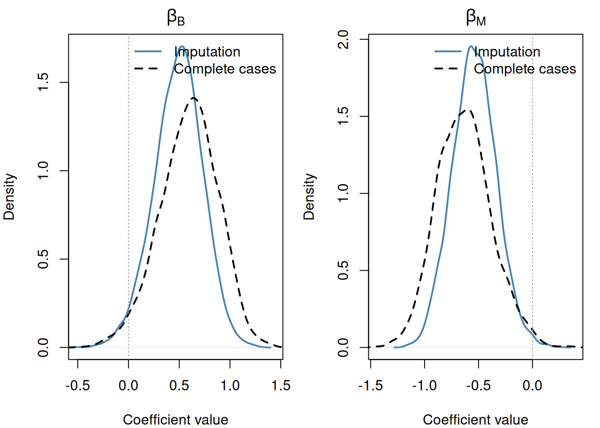
You see that for the imputation case our coefficient posteriors are tighter.
Let’s plot the CI for the imputed points against the other covariate and target:
# Extract B_miss draws → matrix (n_draws × N_miss)
B_miss_cols <- paste0("B_miss[", seq_along(miss_idx), "]")
B_miss_mat <- as.matrix(draws_imp[, B_miss_cols])Warning: Dropping 'draws_df' class as required metadata was removed.B_impute_mu <- colMeans(B_miss_mat)
B_impute_ci <- apply(B_miss_mat, 2, PI) # 2 × N_miss, 89% interval
# Full B vector (NAs at miss_idx) for plotting observed points
B_full <- d$B # standardized neocortex, NAs intact
par(mfrow = c(1, 2), mar = c(4, 4, 1, 1))
# ── Plot 1: neocortex (B) vs kcal (K) ────────────────────────────────────────
plot(B_full, d$K,
pch = 16, col = rangi2,
xlab = "neocortex percent (std)",
ylab = "kcal milk (std)")
Ki <- d$K[miss_idx]
points(B_impute_mu, Ki)
for (i in seq_along(miss_idx)) {
lines(B_impute_ci[, i], rep(Ki[i], 2))
}
# ── Plot 2: log body mass (M) vs neocortex (B) ───────────────────────────────
plot(d$log_M, B_full,
pch = 16, col = rangi2,
xlab = "log body mass (std)",
ylab = "neocortex percent (std)")
Mi <- d$log_M[miss_idx]
points(Mi, B_impute_mu)
for (i in seq_along(miss_idx)) {
lines(rep(Mi[i], 2), B_impute_ci[, i])
}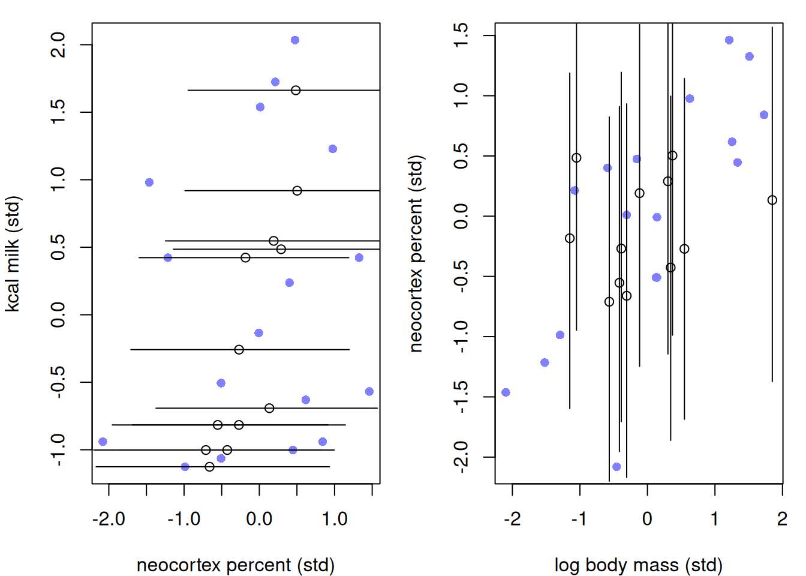
Notice that there is some sort of linear relationship between the imputed \(B\) and \(K\), this is because information is shared between the imputed and observed \(B\) values. But if we look at the relationship with \(M\), there is no correlation even thogh we know that there is. To remedy this, we will change the prior for \(B\) to be:
\[(M_i, B_i) \sim \text{MVNormal}((\mu_M, \mu_B), S)\]
mod <- cmdstan_model('mod_15.7.stan')
fit <- mod$sample(
data = dlist,
seed = 123,
chains = 4,
parallel_chains = 4,
iter_warmup = 1000,
iter_sampling = 1000,
refresh = 500,
show_messages = F, show_exceptions = F
)
fit$summary(c("alpha", "beta_B", "beta_M", "sigma", "Rho[1,2]"))# A tibble: 5 × 10
variable mean median sd mad q5 q95 rhat ess_bulk ess_tail
<chr> <dbl> <dbl> <dbl> <dbl> <dbl> <dbl> <dbl> <dbl> <dbl>
1 alpha 0.0368 0.0375 0.160 0.161 -0.225 0.298 1.000 4395. 2905.
2 beta_B 0.583 0.599 0.251 0.247 0.143 0.970 1.00 1714. 2481.
3 beta_M -0.643 -0.651 0.216 0.211 -0.988 -0.284 1.00 2107. 2662.
4 sigma 0.827 0.814 0.141 0.135 0.620 1.08 1.00 2149. 3108.
5 Rho[1,2] 0.632 0.651 0.138 0.131 0.388 0.821 1.00 3313. 2919.Let’s see how this effected our posteriors for the imputed values:
draws_imp <- fit$draws(format = "df")
# Extract B_miss draws → matrix (n_draws × N_miss)
B_miss_cols <- paste0("B_miss[", seq_along(miss_idx), "]")
B_miss_mat <- as.matrix(draws_imp[, B_miss_cols])Warning: Dropping 'draws_df' class as required metadata was removed.B_impute_mu <- colMeans(B_miss_mat)
B_impute_ci <- apply(B_miss_mat, 2, PI) # 2 × N_miss, 89% interval
# Full B vector (NAs at miss_idx) for plotting observed points
B_full <- d$B # standardized neocortex, NAs intact
par(mfrow = c(1, 2), mar = c(4, 4, 1, 1))
# ── Plot 1: neocortex (B) vs kcal (K) ────────────────────────────────────────
plot(B_full, d$K,
pch = 16, col = rangi2,
xlab = "neocortex percent (std)",
ylab = "kcal milk (std)")
Ki <- d$K[miss_idx]
points(B_impute_mu, Ki)
for (i in seq_along(miss_idx)) {
lines(B_impute_ci[, i], rep(Ki[i], 2))
}
# ── Plot 2: log body mass (M) vs neocortex (B) ───────────────────────────────
plot(d$log_M, B_full,
pch = 16, col = rangi2,
xlab = "log body mass (std)",
ylab = "neocortex percent (std)")
Mi <- d$log_M[miss_idx]
points(Mi, B_impute_mu)
for (i in seq_along(miss_idx)) {
lines(rep(Mi[i], 2), B_impute_ci[, i])
}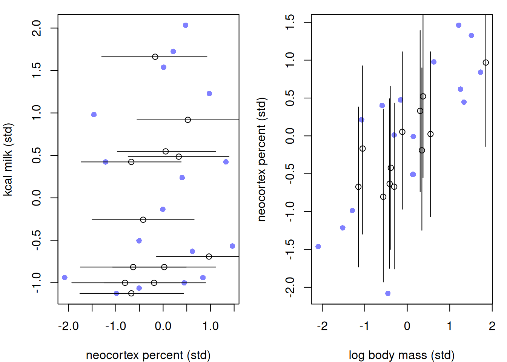
A god is a moralizing god if it punishes the wicked and rewards the just. Let’s look at some data that sees how societies advance given their different types of gods:
data("Moralizing_gods")
d <- Moralizing_gods
str(d)'data.frame': 864 obs. of 5 variables:
$ polity : Factor w/ 30 levels "Big Island Hawaii",..: 1 1 1 1 1 1 1 1 1 2 ...
$ year : int 1000 1100 1200 1300 1400 1500 1600 1700 1800 -600 ...
$ population : num 3.73 3.73 3.6 4.03 4.31 ...
$ moralizing_gods: int NA NA NA NA NA NA NA NA 1 NA ...
$ writing : int 0 0 0 0 0 0 0 0 0 0 ...The data looks at different region’s (polity) population sizes at different years. It also states whether the society believed in moralizing gods and whether literacy (writing) was present.
table(d$moralizing_gods, useNA = 'always')
0 1 <NA>
17 319 528 Lots of missing values and barely any non-moralizing gods.
symbol <- ifelse( d$moralizing_gods==1 , 16 , 1 )
symbol <- ifelse( is.na(d$moralizing_gods) , 4 , symbol )
color <- ifelse( is.na(d$moralizing_gods) , "black" , rangi2 )
plot( d$year , d$population , pch=symbol , col=color , xlab="Time (year)" , ylab="Population size" , lwd=1.5 )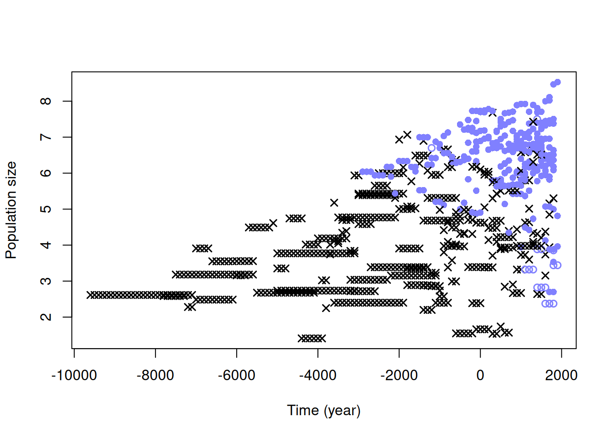
Looks like we are biased in regards to our missingness - most missingness is from BC. So very much non-random.
table(gods=d$moralizing_gods, literacy=d$writing, useNA='always') literacy
gods 0 1 <NA>
0 16 1 0
1 9 310 0
<NA> 442 86 0There is really not much we can do with this scenario. If we made the assumption that “moralizing gods” was MCAR, we would be obviously be wrong given the table and plot above. If we consider the optimistic DAG: $P G G^* R_G W P $, where \(R_G\) is influenced by \(W\), we might try to condition on \(W\) to remove the bias of missingness. But this is like conditioning on a post-treatment effect since \(W\) is directly impacted by \(P\).
Discrete random variables are hard to sample from, making missing data that is discrete a bit of a pain to work with. But no worries, we can just marginalize them out. Consider an example where the number of cats at a house effects the amount of singing a bird produces. And within a minute of singing, we want to count the number of different notes present in the song. But we are unable to observe the number of cats for 20% of houses. The DAG might look something like:
\[R_C \rightarrow C^* \leftarrow C \rightarrow N\]
Where \(C^*\) is the indicator (cats or no cats) we can actually observe at a given house. The process might look something like:
\[\begin{align} N_i &\sim \text{Poisson}(\lambda_i) \\ \log \lambda_i &= \alpha + \beta C_i \\ C_i &\sim \text{Bernoulli}(\kappa) \\ R_{C,i} &\sim \text{Bernoulli}(\rho) \end{align}\]
set.seed(9)
N_houses <- 100L
alpha <- 5
beta <- (-3)
k <- 0.5
r <- 0.2
cat <- rbern( N_houses , k )
notes <- rpois( N_houses , alpha + beta*cat )
R_C <- rbern( N_houses , r )
cat_obs <- cat
cat_obs[R_C==1] <- (-9L)
dat <- list(
notes = notes,
cat = cat_obs,
RC = R_C,
N = as.integer(N_houses) )Here we set \(C^*=-9\) if \(R_C = 1\).
Let’s think about the probability of \(N\): \(P(N_i)\). It is really the average over the different possible values of \(C\), such that:
\[P(N_i) = P(C_i = 1) \cdot P(N_i|C_i=1) + P(C_i = 0) \cdot P(N_i|C_i=0)\]
mod <- cmdstan_model("mod_15.8.stan")
fit <- mod$sample(
data = dat,
seed = 123,
chains = 4,
parallel_chains = 4,
iter_warmup = 1000,
iter_sampling = 1000,
refresh = 500,
show_messages = F, show_exceptions = F
)
fit$summary(c("a", "b", "k"))# A tibble: 3 × 10
variable mean median sd mad q5 q95 rhat ess_bulk ess_tail
<chr> <dbl> <dbl> <dbl> <dbl> <dbl> <dbl> <dbl> <dbl> <dbl>
1 a 1.61 1.61 0.0638 0.0626 1.50 1.71 1.00 2595. 2693.
2 b -0.797 -0.797 0.120 0.119 -0.994 -0.600 1.00 2550. 2489.
3 k 0.461 0.461 0.0540 0.0541 0.374 0.552 1.00 3197. 2811.Looks like the parameters are pretty spot on with what we might expect.
Now, how do we recover the value for \(C_i\) given our posteriors? By Bayes rule of course:
\[\Pr(C_i = 1 \mid N_i) = \frac{\Pr(N_i \mid C_i = 1)\,\Pr(C_i = 1)}{\Pr(N_i \mid C_i = 1)\,\Pr(C_i = 1) + \Pr(N_i \mid C_i = 0)\,\Pr(C_i = 0)}\]
We actually already have this in our generated quantities block:
draws <- fit$draws(format = "df")
p_cat_cols <- paste0("p_cat[", 1:dat$N, "]")
p_cat_mean <- colMeans(draws[, p_cat_cols])Warning: Dropping 'draws_df' class as required metadata was removed.par(mfrow = c(1, 2), mar = c(4, 4, 1.5, 1))
# Left: posterior Pr(cat=1) vs true cat
plot(p_cat_mean, cat,
xlab = "Pr(cat present | notes)",
ylab = "True cat",
pch = ifelse(dat$RC == 1, 1, 19),
col = ifelse(dat$RC == 1, "gray40", rangi2))
abline(v = 0.5, lty = 2, col = "gray60")
legend("topleft",
legend = c("Observed", "Missing"),
pch = c(19, 1),
col = c(rangi2, "gray40"),
bty = "n")
# Right: notes vs Pr(cat=1)
plot(notes, p_cat_mean,
xlab = "Notes sung",
ylab = "Pr(cat present | notes)",
pch = ifelse(dat$RC == 1, 1, 19),
col = ifelse(dat$RC == 1, "gray40", rangi2),
ylim = c(0, 1))
abline(h = 0.5, lty = 2, col = "gray60")
legend("topright",
legend = c("Observed", "Missing"),
pch = c(19, 1),
col = c(rangi2, "gray40"),
bty = "n")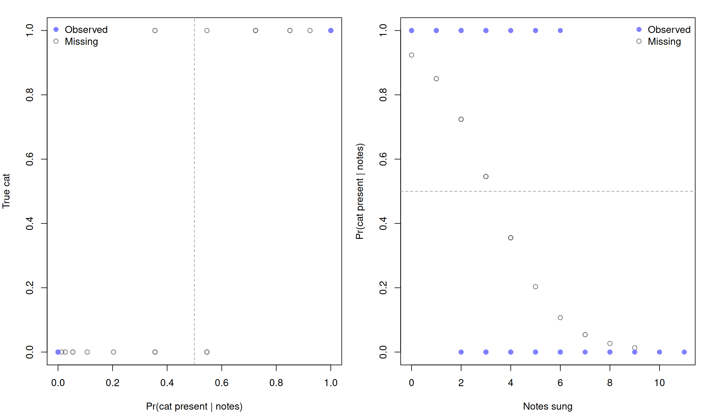